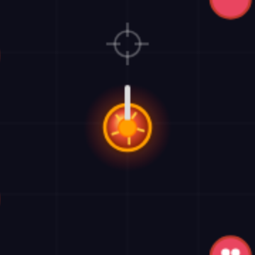
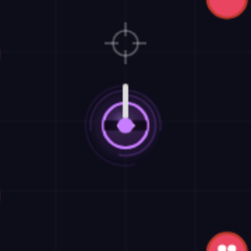
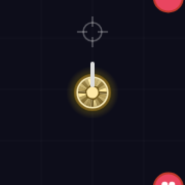
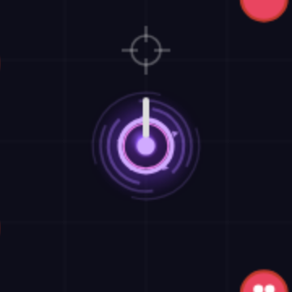
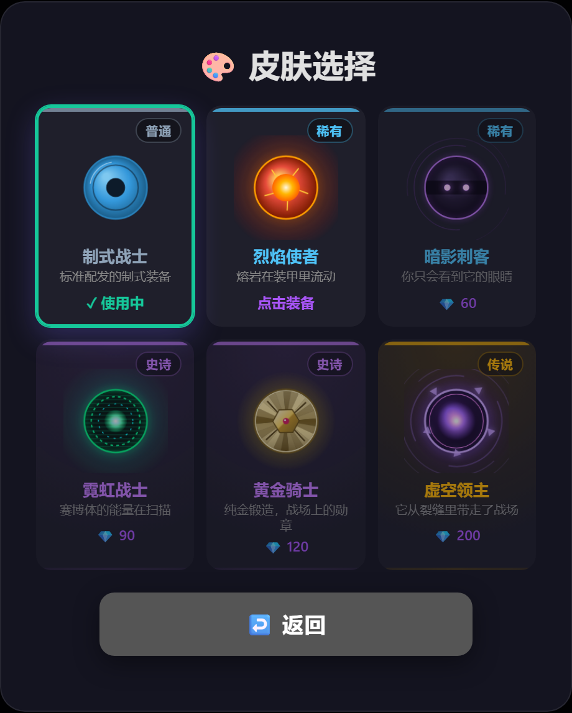

03 / 创意策划案：六套皮肤的分层设计
把"换个颜色"改成"一套设计"
每套皮肤先定一个视觉概念（它要表达什么），再拆成六层渲染结构，最后用稀有度决定动效密度。 以下全部为真实游戏内渲染截图，非设计稿。
设计骨架：六层渲染结构（所有皮肤共用，按稀有度增减）
| 层 | 内容 | 解决的问题 |
|---|---|---|
| L0 可读性底衬 | 玩家身下一圈半透明深色垫底 | 敌人贴身围攻时，玩家剪影不被淹没（剪影优先） |
| L1 底盘 | 中心偏光源的径向渐变，而非纯色 | 产生球体体积感，脱离"扁平圆" |
| L2 内核 | 高亮能核 + 呼吸脉动 | 视觉焦点，让角色"像活的" |
| L3 描边 | 亮色/双色描边 + 发光 | 暗色皮肤在暗背景上的可读性（暗影刺客的关键） |
| L4 结构装饰 | 旋转六边形盾徽 / 装甲分片 / 扫描线 / 电路环 | 赋予主题，让皮肤"有内容"而不是"有色块" |
| L5 光效与环饰 | 外围光晕、吸积盘旋臂、环绕碎片（加法混合） | 高级感与存在感，稀有度越高越丰富 |

制式战士 普通
"标准配发的制式装备"
设计意图：克制。作为基准款，它要"干净但不寒酸"，建立整个皮肤体系的下限。
用护甲环 + 左上高光弧表达"精良制式装备"，不加任何光效。

烈焰使者 稀有
"熔岩在装甲里流动"
设计意图：高温与狂暴。用暖色渐变 + 外焰呼吸光晕营造"持续燃烧"感；
五条缓慢旋转的熔岩裂纹暗示内部高温。第一套带发光反馈的皮肤，作为付费诱饵。

暗影刺客 稀有
"你只会看到它的眼睛"
设计意图：这是整套方案里最难的一套——因为它必须解决"暗色皮肤在暗背景上看不见"的
固有矛盾。解法：放弃靠填充色表达存在感，改用冷紫发光描边 + 三道流动残影 + 面罩下两个浮动光点。
名字承诺"暗影"，视觉给的是"黑暗中盯着你的眼睛"。

霓虹战士 史诗
"赛博体的能量在扫描"
设计意图：全场对比度最高的一套。用加法混合（
lighter）做真正的发光体，
配合向上流动的扫描线、两层反向旋转的虚线电路环。
战术价值：高亮存在感让玩家在混战中更容易定位自己。

黄金骑士 史诗
"纯金锻造，战场上的勋章"
设计意图：金属质感。初版用径向渐变，结果是一个"黄色的饼"——
因为金属的关键不是颜色，而是沿圆周交替的明暗反射带。
改用 24 个扇形逼近锥形渐变（Canvas 无原生 conic gradient），模拟旋转高光；
叠加四片装甲分片与中央盾徽+宝石，表达"骑士"的重量感。

虚空领主 传说
"它从裂缝里带走了战场"
设计意图：体量与压迫感，作为整个体系的"向往型"顶点。
三层逆向旋转的吸积盘旋臂营造引力场；五片环绕漂浮的三角碎片（形状语言=破碎/危险）；
双色描边 + 脉动奇点核心。视觉半径最大、动效最多，是最高稀有度的合理表达。

改造后的皮肤商店每张卡片用独立 canvas 实时渲染真实皮肤（不是静态图），稀有度角标 + 主题文案 + 价格分层。玩家在购买前就能看到"它动起来是什么样"。